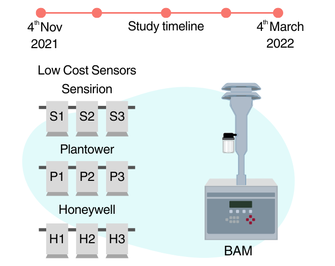
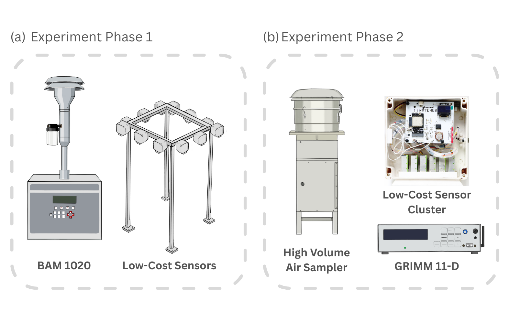
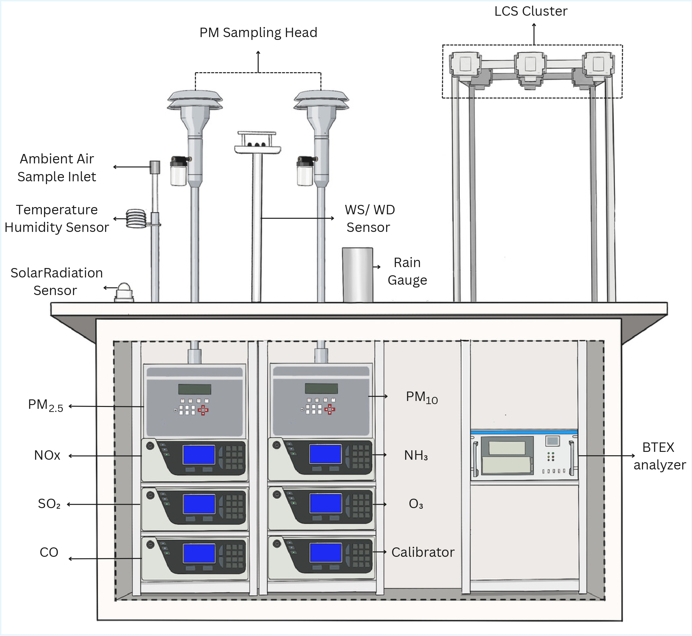
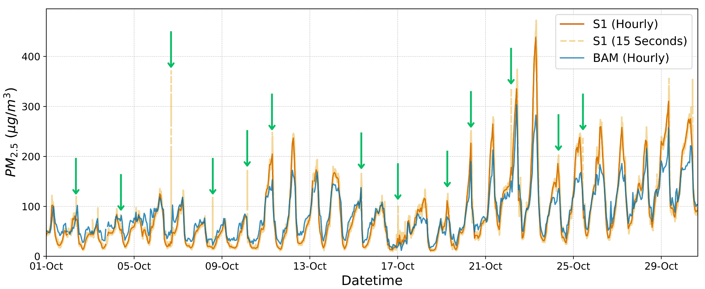
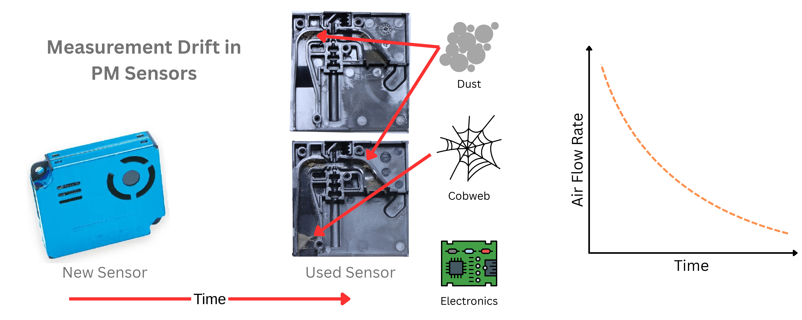

Research Focus
My research focuses on bridging environmental challenges with engineering solutions by developing and deploying advanced monitoring technologies. I specialize in designing low-cost sensing systems, performing rigorous calibration and validation, and analyzing high-resolution environmental data to assess impacts on human health and ecosystems. Through integrating sensor networks and data-driven approaches, my work aims to deliver reliable, scalable solutions for urban air quality management and informed decision-making.

Research Works
-
LCS Evaluation under High Humidity and PM exposure conditions in Delhi's Winter

Delhi’s unique geographical setting, combined with intense anthropogenic emissions and unfavorable meteorological conditions during winter, makes it one of the most polluted regions in the world. Addressing this challenge requires high spatiotemporal resolution data on particulate matter (PM), which conventional reference-grade monitors cannot provide at scale due to cost and operational constraints. Low-cost sensors (LCS) offer a promising alternative; however, their reliability under such extreme conditions has not been thoroughly evaluated. To address this gap, we conducted a four-month collocated field study during winter, deploying multiple LCS alongside a reference monitor. The results show that LCS performance degrades significantly at relative humidity levels above 80% and at PM2.5 concentrations exceeding 100 µg/m3, highlighting key limitations in high-pollution environments. The detailed study is published in IEEE Sensors Journal.
-
Comprehensive Field Evaluation of Low-Cost PM Sensors in Arid Conditions: Effects of Humidity, Particle Size, and Composition

Performance of LCS in arid, dust-dominated conditions remains uncertain. This ongoing study in Jodhpur, India evaluates three commercial sensors using collocation with BAM 1020 (77 days) and GRIMM OPC (17 days). All sensors meet precision criteria (CV < 30%), with Plantower showing highest agreement (R2 > 0.76), followed by Sensirion and Honeywell. Strong linearity is observed for fine particles, while performance drops sharply for coarse fractions, reflecting limited sensitivity beyond 2.5 µm and mineral dust dominance. Results indicate reliable fine PM measurement but significant uncertainty in coarse particle estimation.
-
A Long-Term Collocated Evaluation of Low-Cost Particulate Matter Sensors: Influence of Co-Pollutants and Meteorological Factors

Reliable PM2.5 data from LCS remains uncertain under extreme pollution conditions such as Delhi, where high concentrations, winter stagnation, and complex emission sources challenge measurement accuracy. This ongoing work addresses the lack of long-term, real-world evaluation by deploying 12 sensors (Plantower, Honeywell, Sensirion) alongside a reference monitor over one year to quantify accuracy, precision, and environmental sensitivity. Results indicate strong variability in performance driven by humidity, concentration levels, and seasonal conditions, highlighting the need for location-specific calibration. Ongoing analysis further examines the influence of greenery, wind speed and direction, solar radiation, and cross-pollutants on sensor response to improve reliability in complex urban environments.
-
Sampling Frequency Effects on PM Sensors and Short-Term Events

The impact of sampling frequency on low-cost PM sensor performance remains unclear despite its importance for optimizing data quality and power use. This study evaluates five SPS30 sensors over one month, comparing performance across sampling intervals from 15 seconds to 60 minutes under high and variable PM2.5 conditions. Results show minimal change in accuracy and linearity across intervals, indicating limited benefit of high-frequency sampling for long-term trends. However, lower sampling frequencies fail to capture short-lived plume events, highlighting a trade-off between data resolution and energy efficiency. These findings support application-specific optimization of sampling strategies, particularly for battery-powered and large-scale deployments.
-
Air Flow-Rate based Measurement Drift Correction in Low-Cost PM Sensors

Long-term drift in low-cost PM sensors remains insufficiently understood despite its impact on data reliability. This study evaluates drift by comparing new, used, and cleaned sensors against a reference BAM under real-world conditions in Delhi. Results show that prolonged deployment leads to dust and debris accumulation, reducing internal airflow by up to 75% and causing systematic underestimation of PM concentrations. Cleaning restores airflow and significantly improves performance, demonstrating that drift is largely driven by physical blockage rather than sensor degradation. These findings highlight the need for routine maintenance and onsite flow verification to ensure reliable long-term sensor operation.